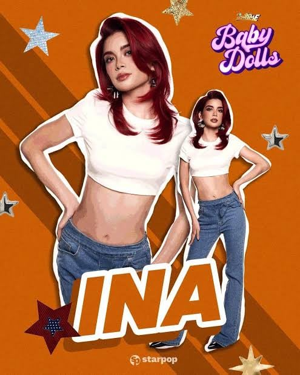

Ina Ortega
Personal Information
Full Name: Ina Ortega
Group: Baby Dolls
Profession: Performer and dancer
Previous Experience: Ballet
Other Profession: Registered Nurse
Nationality: Filipino
Birthday: July 28, 1999
Hometown: Quezon City
About Her
Ina is a member of Baby Dolls who has a background in ballet[cite: 6]. Entertainment coverage has reported that she is also a registered nurse, bringing together her healthcare profession and her passion for performing[cite: 6].
Back to Home